正则表达式手册
ERE 与 BRE的不同
-
ERE使用常规的转移，比如在BRE中，\(\) 代表的是向后应用组，而在ERE中，他们代表
()，而在ERE中，正常使用()则是分组 - ？ 和 + 的加入
-
*本身的处理大体一致，不过在ERE中不能放在第一位，在BRE中放在第一位表示裸字符
速查
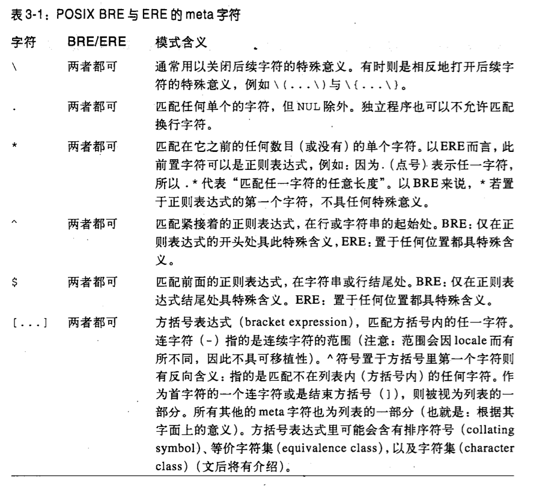 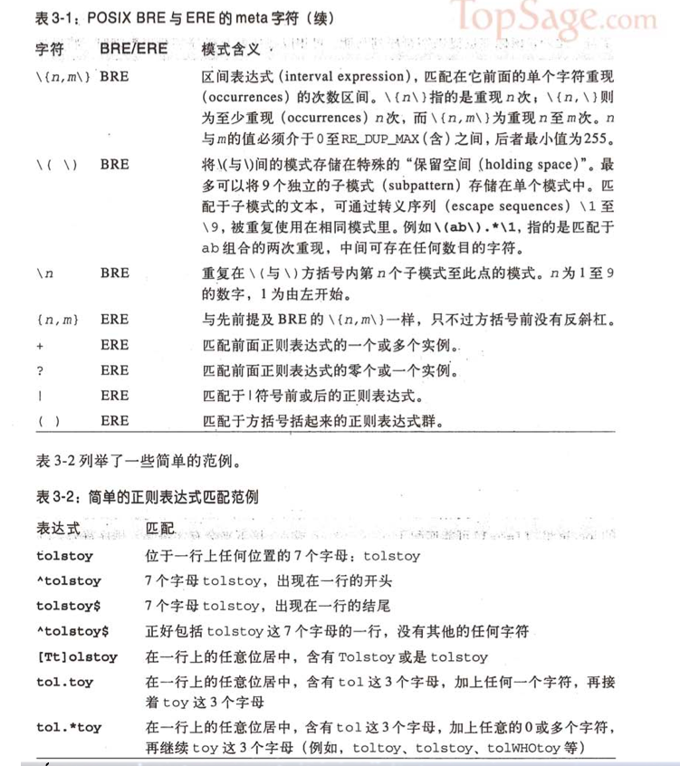 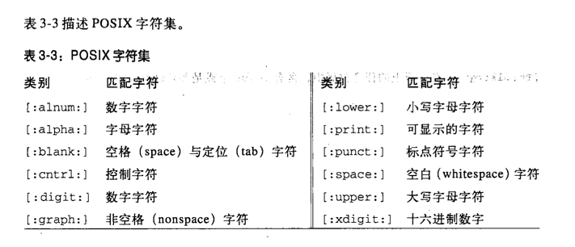 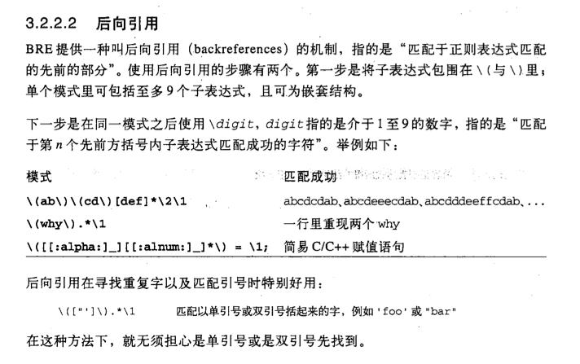 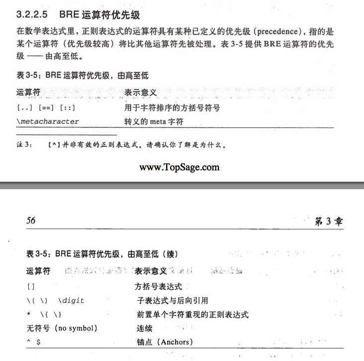 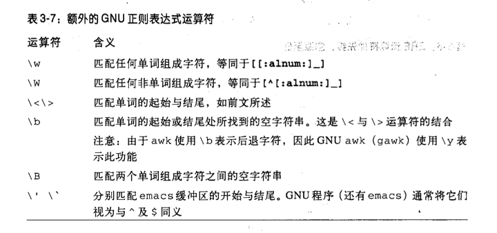 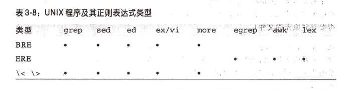
() ，而在ERE中，正常使用 ()则是分组
* 本身的处理大体一致，不过在ERE中不能放在第一位，在BRE中放在第一位表示裸字符
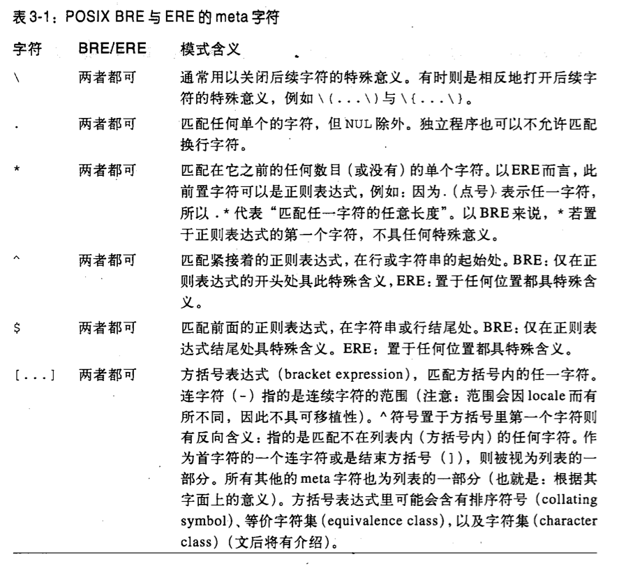 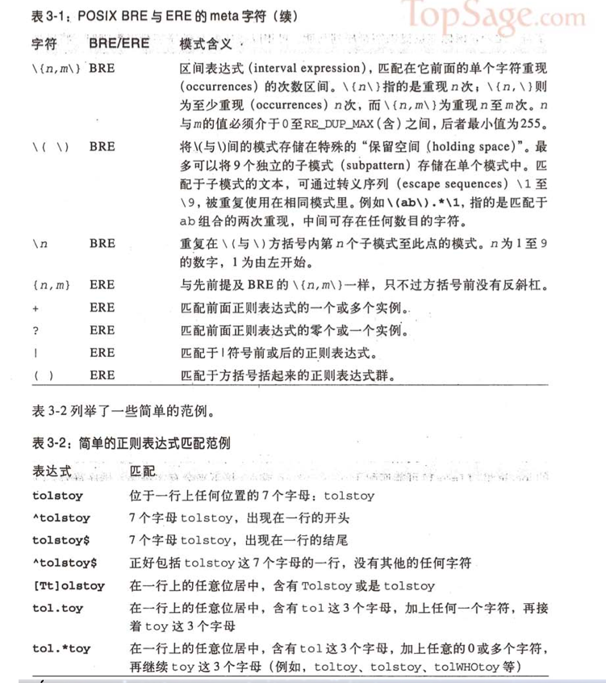 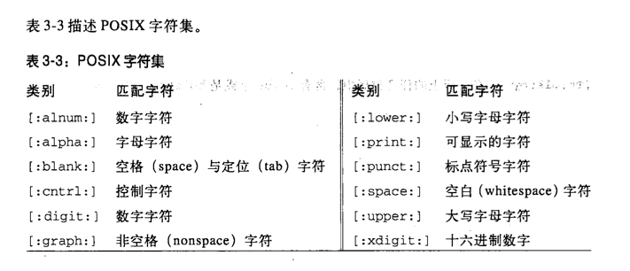 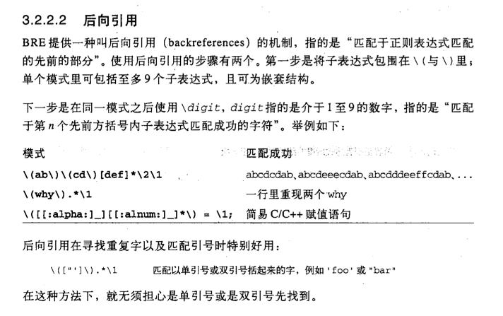 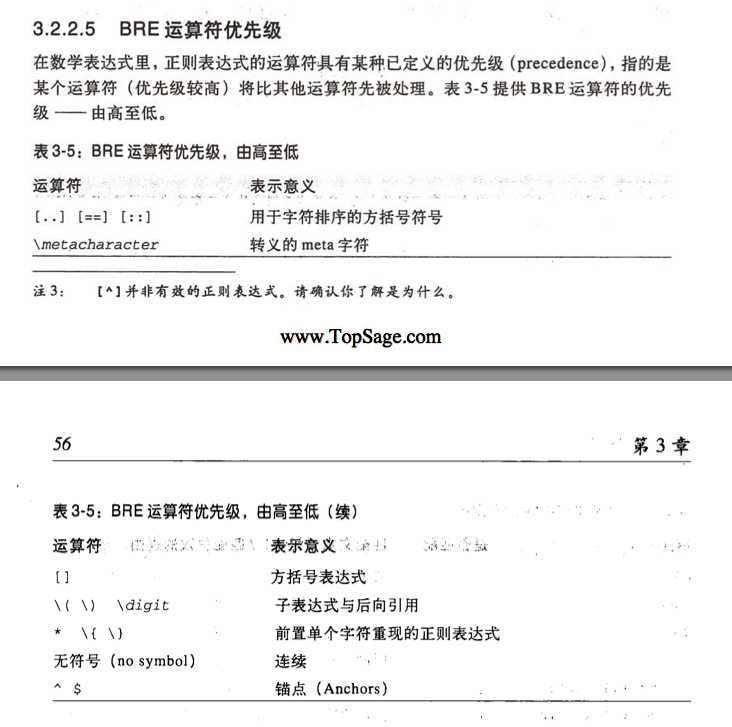 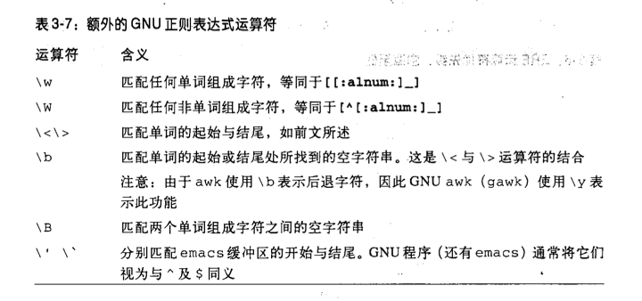 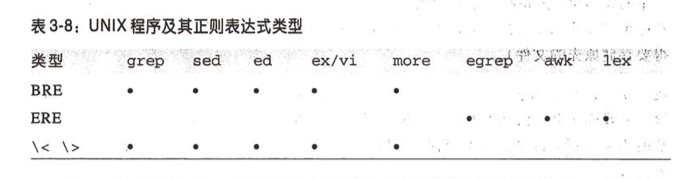
主题来自 Ruchee